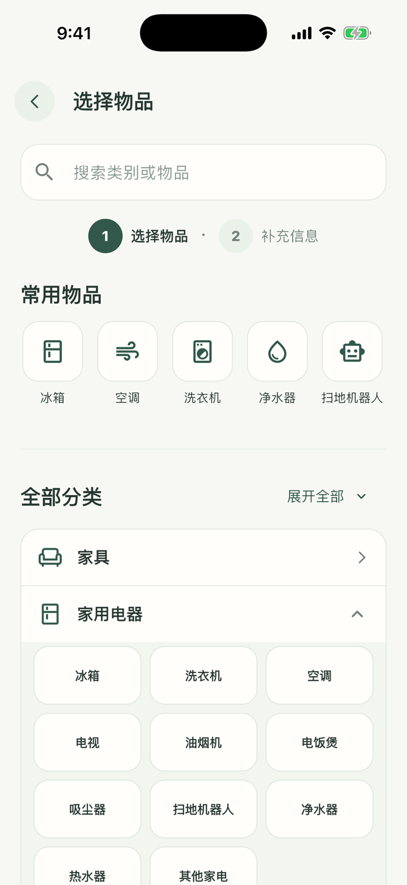
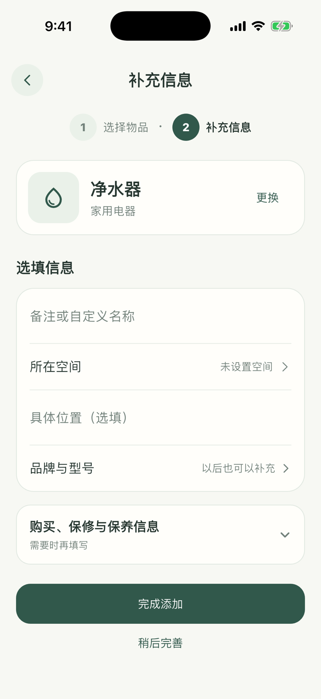

01 · 从一件真实物品开始
建立物品档案
先为净水器建立档案，之后的保养计划、照片、费用和历史记录都会归在这件物品下面。


- 1
打开添加入口
前往“物品”，点击右上角的添加按钮。
- 2
选择净水器
在常用物品中点击“净水器”。系统会自动带入适合的类别，名称仍可调整。
- 3
补充有用信息
按需填写所在空间、品牌、型号、购买信息和档案照片；不确定的内容可以以后再补。
- 4
完成添加
检查名称和空间后保存。物品会出现在档案列表中，并可继续建立保养计划。
01 · 从一件真实物品开始
先为净水器建立档案，之后的保养计划、照片、费用和历史记录都会归在这件物品下面。


前往“物品”，点击右上角的添加按钮。
在常用物品中点击“净水器”。系统会自动带入适合的类别，名称仍可调整。
按需填写所在空间、品牌、型号、购买信息和档案照片；不确定的内容可以以后再补。
检查名称和空间后保存。物品会出现在档案列表中，并可继续建立保养计划。